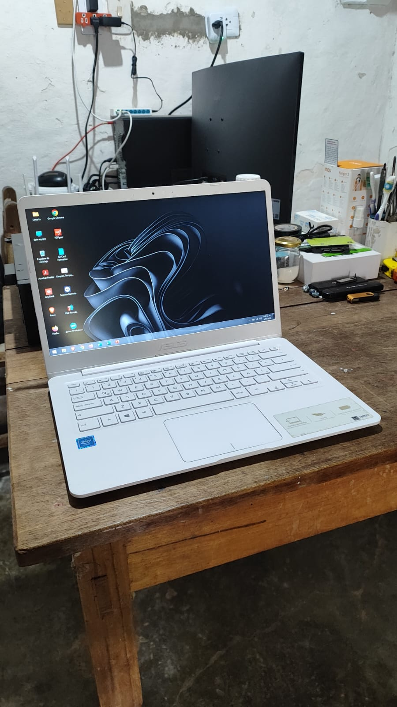

Portatil ASUS Ultradelgado
PORTATIL ASUS E406M
Portatil de segunda mano en perfecto estado de funcionamiento, color blanco, pantalla de 14", Windows 10, Office 2024, WiFi, Bluetooth, batería de larga duración, teclado y cargador nuevos. Con garantía.
- Procesador Celeron N4000 Series
- Almacenamiento 64 GB
- RAM 4 GB DDR4
- Para más información da en el botón de WhatsApp
$500mil Pesos
WhatsApp